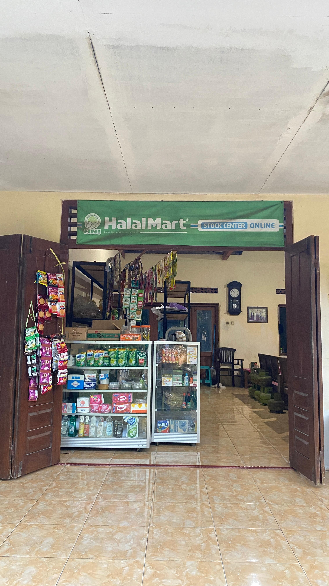

Halal Mart
Pemilik : Nur Hadi Prihantoro
Produk : Sembako
Tahun Berdiri : 2020
Halal Mart merupakan usaha milik Bapak Nur Hadi Prihantoro yang bergerak di bidang perdagangan sembako dan telah berdiri sejak tahun 2020. Usaha ini menyediakan berbagai kebutuhan pokok masyarakat dengan bahan baku yang diperoleh dari distributor sehingga ketersediaan produk dapat terjaga. Dalam menjalankan usahanya, seluruh kegiatan operasional masih dikerjakan sendiri oleh pemilik. Pemasaran dilakukan secara penjualan langsung kepada konsumen yang datang ke toko.